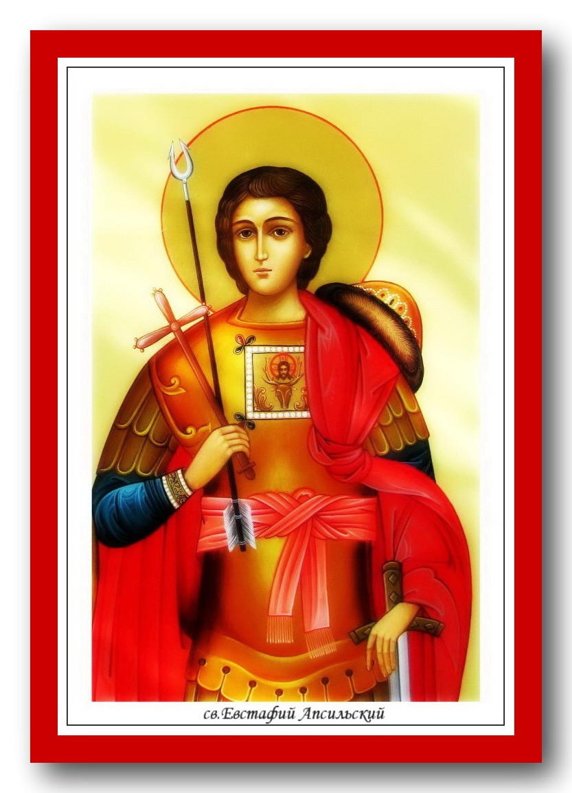
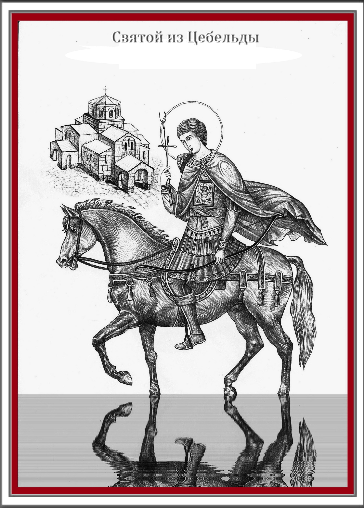
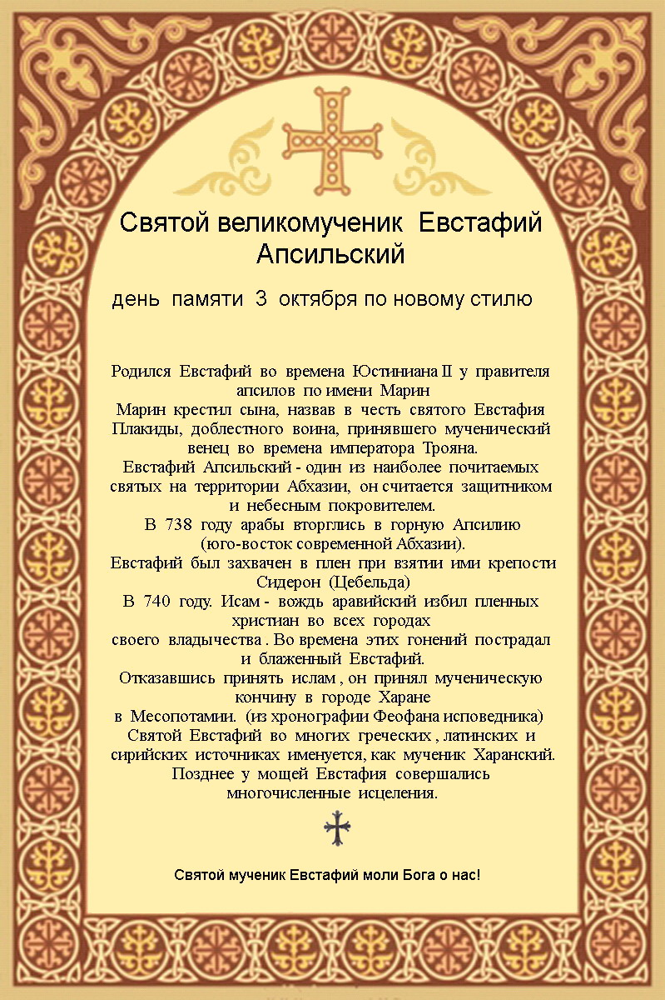
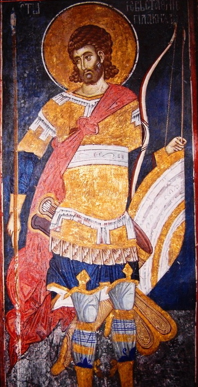
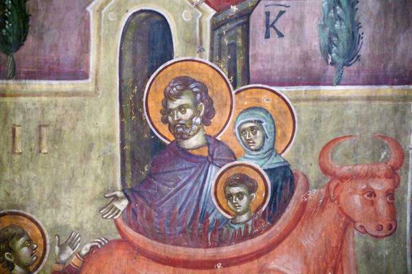
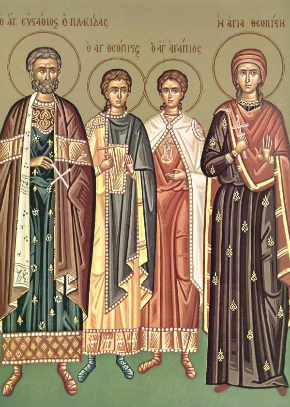

3 10 2012 (1683 дня 21 час назад)
Евстафий Плакида и Евстафий Апcильский – святые великомученики Христовы.



Св. вмч. Евстафий Плакида

Святой великомученик Евстафий был военачальником при императорах Тите (79 - 81) и Траяне (98 - 117) и до Крещения носил языческое имя Плакида.
"Еще не познав Христа, Плакида творил дела милосердия, помогая всем бедствующим и страждущим. Господь не оставил добродетельного язычника во мраке идолопоклонства.
Однажды на охоте он преследовал оленя, который остановился, взбежав на высокую гору, и Плакида вдруг увидел между его рогами сияющий Крест, а на нем - распятого Сына Божия. Пораженный Плакида услышал глас: "Зачем ты гонишь Меня, Плакида?" "Кто Ты, Господи, говорящий со мною?" - в страхе спросил Плакида. И услышал в ответ: "Я - Иисус Христос, Бог, воплотившийся ради спасения людей и претерпевший вольные страдания и Крестную смерть. Ты Меня, не зная, почитаешь, ибо твои добрые дела и обильные милостыни дошли до Меня. Явился Я здесь, чтобы обратить и присоединить тебя к верным рабам Моим. Ибо не хочу Я, чтобы человек, творящий праведные дела, погиб в сетях вражиих".
Плакида воскликнул: "Господи, я верую, что Ты - Бог Неба и земли, Творец всех тварей. Молю Тебя, Господи, научи меня, что мне делать". И вновь прозвучал Божественный глас: "Иди к священику христианскому, приими от него Крещение, и он наставит тебя ко спасению".
Вернувшись домой, он крестился вместе со своей женой Феопистией и двумя сыновьями — Агапием и Феопистом (родные Евстафия также почитаются в лике святых).

Евстафий перенёс испытания, сходные с испытаниями ветхозаветного Иова — слуги его умерли, скот пал, а сам он во время путешествия на корабле в Египет был разлучён со своей женой, а потом и с детьми. Перенеся без ропота эти испытания, святой Евстафий обрёл своих родных и как прославленный военачальник был призван на войну императором Траяном. После окончания боевых действия святой Евстафий с почестями вернулся в Рим. Во время празднования императором Адрианом, сменившем к тому времени на престоле Траяна, одержанной победы над варварами, приглашённый со своей семьёй Евстафий отказался принести жертвы языческим богам и открыто исповедовал себя христианином. Евстафий, осуждённый со своей семьёй на растерзание диким зверям, не был ими тронут. После этого император велел бросить их живыми в раскалённого медного быка, где святые и приняли свою мученическую смерть. Тела их остались невредимыми и были погребены христианами.
